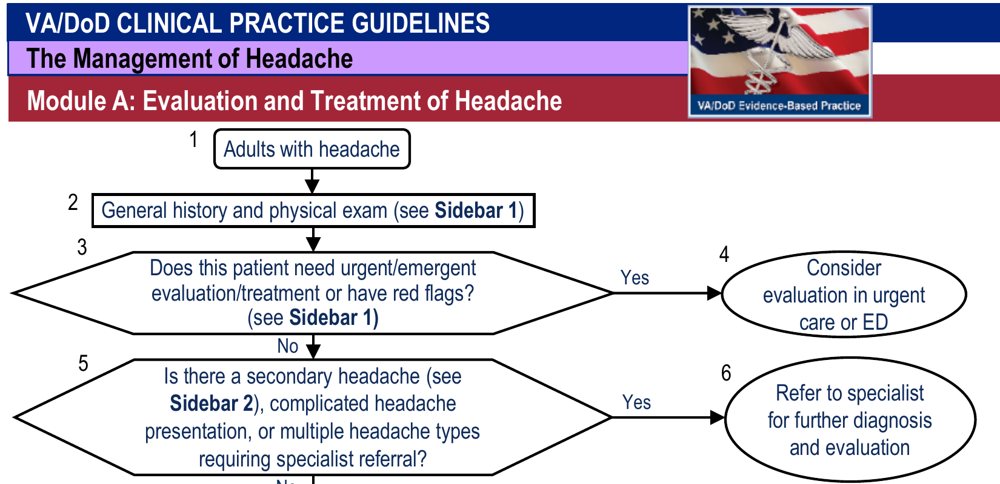

Q1. Mulher 30 anos, cefaleia latejante unilateral há 5 h, com náusea, dormência prévia em membros superiores, exame neurológico normal, crises semelhantes no passado e HF materna com padrão menstrual. Melhor enquadramento imediato?
Caso clínico · porta de emergência
O caso que já aponta primária
Mulher de 30 anos, cefaleia há 5 horas, forte e latejante em frontotemporal esquerda, com náusea, vômito e dormência prévia em membros superiores. Exame neurológico sem anormalidades. Como enquadrar?
CasoMulher · 30 anos · posto de saúde
Mulher de 30 anos chega ao posto com cefaleia há cerca de 5 horas. Nega medicamento prévio para a dor atual. Dor forte, latejante, em região frontotemporal esquerda. Há náusea e houve vômito; a náusea permanece.
A dor começou logo após o almoço e foi precedida por dormência em membros superiores. Exame físico e neurológico: sem anormalidades.
Alarme limpo, exame normal
Até aqui, sem sinais de alarme. Exame físico e neurológico normais apontam para cefaleia primária — o funil de triagem já afastou o ramo “investigar secundária agora”.
O funil é negativo quando não há red flag (idade > 50, déficit focal, alteração de consciência, início súbito/relâmpago, piora progressiva, pós-trauma, febre, imunossupressão, neoplasia, gestação, cefaleia nova na gravidez). Sem nenhum desses marcadores, o raciocínio entra no catálogo das primárias.
Crises semelhantes + história familiar
Há eventos semelhantes no passado (crises que se parecem entre si). A mãe relata muita dor de cabeça na juventude, principalmente na menstruação — componente de história familiar.
Recorrência com fenótipo estável + HF positiva = forte componente de enxaqueca/migrânea. Não se trata ainda de diagnóstico fechado, mas o nome sindrômico já se antecipa.
Nome sindrômico: enxaqueca
Com clínica + exame normal + recorrência + HF, o diagnóstico sindrômico se antecipa. O que se detalha a seguir são as principais primárias — e, no fecho, uma secundária “diferentona” (abuso de medicamento). A primeira primária a abrir é a enxaqueca (migrânea): quadro florido, exatamente o do caso.
Mantra de série: alarme limpo — agora case a clínica com a droga certa.
Por que importa na prática
Errar o nome da dor com exame limpo custa menos do que errar o alarme — mas acertar o nome abre o arsenal certo (abortivo, profilaxia) sem “analgésico eterno”. A maior parte do raciocínio de enxaqueca começa sem exame de imagem, desde que o alarme esteja limpo.

U.S. Department of Veterans Affairs and U.S. Department of Defense. VA/DoD Clinical Practice Guideline for the Management of Headache — Pocket Card, Module A, September 2023. Recorte da página 1 — U.S. Government work · fonte
Alarme limpo antes da clínica
A entrada do funil: se há red flag (sinal de alarme), a rota é investigar secundária; sem red flag, a primária entra no leque. O caso apresentado passa pelo ramo limpo.
Quiz
Q2. Qual elemento do caso mais reforça primária recorrente (e não evento isolado secundário)?